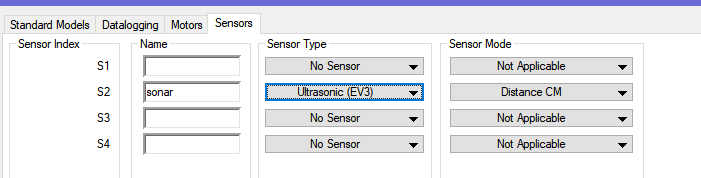

© Fort Street High School Robotics
An ultrasonic sensor ('sonar') works by transmitting and receiving ultrasonic sound - sound with a frequency above human hearing. By recording the time it takes for the sound wave to bounce off an object and return to the sensor, we can approximate the distance.
The EV3 sensor has two 'eyes' - one is the transmitter and the other is the reciever. When you play around with it, you will get a raw value from around 1 to 255. This doesn't quite equate to millimetres, so you should not use a ruler to make measurements - use the sensor itself!
You may also notice that the sensor is less accurate in measuring distances to objects very close and very far away. Play around by printing the value on the screen and observing values
Set up the sensor by choosing the correct port and selecting Ultrasonic (EV3):

Simply use SensorValue[sonar] to get the value:
#pragma config(Sensor, S2, sonar, sensorEV3_Ultrasonic)
//*!!Code automatically generated by 'ROBOTC' configuration wizard !!*//
task main()
{
// create the variables
int distance;
// Repeatedly do what is in the brackets
while (true) {
// Record the value into our distance variable
distance = SensorValue[sonar];
// Print it on the 4th line of the screen
displayCenteredTextLine(4, "%d", distance);
}
}